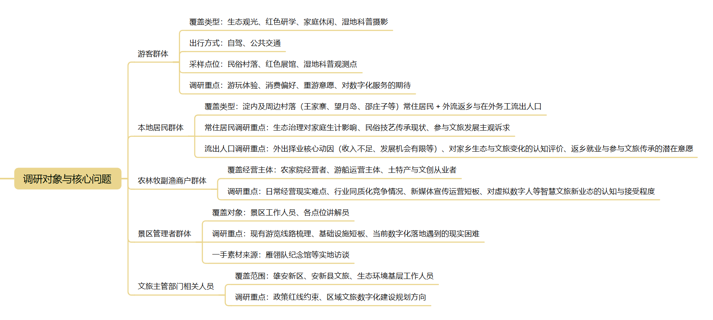
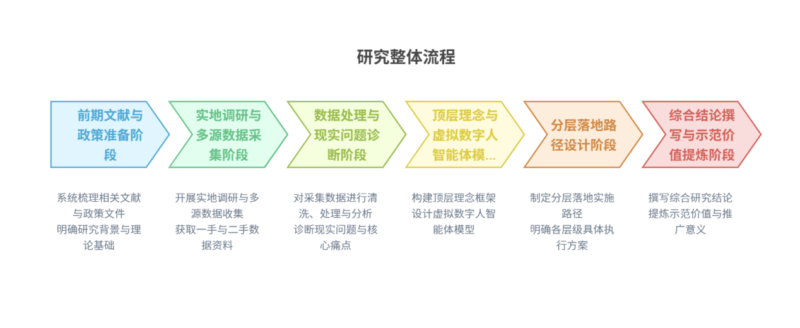
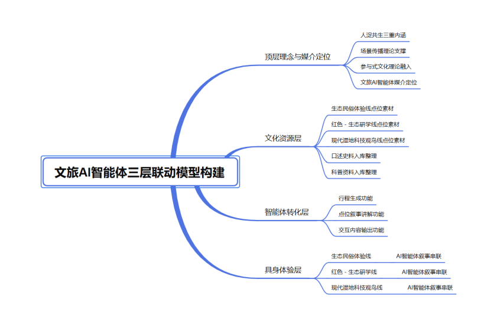

摘要
当前白洋淀正处于从生态修复向保护利用并重转型的阶段，但本地生态、红色、民俗资源长期处于富集却分散的状态。基于 127 份有效问卷和实地走访，调研发现 88.64% 的游客仅以生态观光为首要目的，红色研学占比仅 9.09%，特色商品消费不足 23%，供需错位明显，人淀共生理念尚未在产业层面有效落地。通过问卷抽样、深度访谈等实证方法，进一步梳理出白洋淀文旅在产品场景、产业价值、品牌传播等方面相互割裂的结构性矛盾。
针对上述问题，本作品提出以虚拟数字人智能体青翎为核心的人淀共生文旅价值重塑方案。青翎设有古风与科技两种形态，能够承担资源整合、理念传播、技术应用、体验优化、利益协调与全域推广六大职能，形成从资源整理、智能转化到实地体验的完整链路。配套生态民俗、红色生态研学、湿地观鸟三条游览线路，贯通行前、行中、行后全周期服务，并通过政企社协同保障、分阶段迭代规划以及针对技术迭代、初期引流、社区参与等潜在风险制定应对策略。本方案可为白洋淀及国内同类复合型湿地景区的文旅价值转化提供可借鉴的实践路径，推动具身传播在文旅场景中的落地应用。
研究背景
政策背景
党的二十届四中全会审议通过的《中共中央关于制定国民经济和社会发展第十五个五年规划的建议》明确提出要“加快经济社会发展全面绿色转型，建设美丽中国”，并将“激发全民族文化创新创造活力，繁荣发展社会主义文化”作为战略任务进行部署。雄安新区作为国家重大战略承载地，其生态治理与文旅发展高度契合这一政策导向，为白洋淀从生态保护走向生态价值转化提供了坚实的政策依据。2017 年 4 月，雄安新区设立，这是以习近平同志为核心的党中央作出的重大历史性战略选择。白洋淀作为雄安新区最重要的生态水体，总面积 366 平方公里，素有“华北明珠”“华北之肾”之誉。习近平总书记三次亲临雄安视察，多次就白洋淀生态治理和保护作出重要指示批示，提出一系列明确要求。
近年来，雄安新区深入实施“五大工程”和“五个一体化”，白洋淀水质历史性好转，水乡韵味更浓，防洪能力更强，相关工作取得良好成效。2025 年 8 月，雄安新区召开白洋淀旅游环境整治提升工作现场会，明确指出白洋淀“正从治理修复为主向保护利用并重阶段转变”。这一转变意味着，白洋淀的发展重心正从单纯的生态保护走向生态价值与文旅价值的协同转化，如何在保护生态环境的基础上实现文旅资源的有效开发，成为新区建设面临的重要课题。
行业背景
党的二十大报告明确提出“坚持以文塑旅、以旅彰文，推进文化和旅游深度融合发展”。在数字技术与体验经济的双重驱动下，文旅产业正经历从传统观光向沉浸式体验的范式转变。根据《中国文化旅游发展报告 2024—2025》，文旅发展呈现明显的层级递进特征：1.0 阶段以标识性符号为核心，2.0 阶段以互联网平台（如小红书、抖音）为核心，3.0 阶段则是以 AI 智能体为核心。依托大数据用户画像、虚拟现实（VR）／增强现实（AR）虚实共生场景构建、人工智能内容生成（AIGC）等具体技术路径，原本受限于物理空间、呈现分散状态的文旅资源，得以通过云端聚合、场景重构与多模态交互（如视听触嗅等多感官体验）进行创新呈现。[1] 白洋淀地处京津冀协同发展核心区域，正处于向 3.0 阶段迈进的关键窗口期，这也是本研究探讨其数字化路径的现实基点。然而，数字技术的深度介入也带来了新的现实挑战：如何避免“重技术轻文化”的倾向，如何在流量逻辑中保持文化深度与在地性，防止旅游体验走向同质化，成为数字文旅高质量发展的核心问题。这对于拥有丰富生态与民俗资源的白洋淀而言，既是重要的时代机遇，也是需要正视的发展门槛。
现实背景
白洋淀文旅产业拥有高质量转型与资源整合需求。白洋淀作为华北平原最大的淡水湖泊，在雄安新区设立后，生态修复工程取得显著成效，水质提升和生物多样性恢复为文旅产业发展奠定了坚实的环境基础。近年来，依托“生态＋红色＋民俗”的复合资源禀赋，白洋淀旅游经济整体呈现稳中向好的发展态势，已成为京津冀地区重要的生态旅游目的地。
现阶段，白洋淀文旅产业正处于从传统观光游向深度体验游的转型期。随着国内旅游消费市场的不断升级，游客的出游动机已从单纯的风景观赏转向对在地文化、情感共鸣和沉浸体验的多元追求。在京津冀协同发展和雄安新区建设的时代背景下，白洋淀不仅承载着区域生态屏障的功能，更面临着从“生态治理”向“生态价值转化”跨越的现实任务。
在此过程中，如何将白洋淀深厚的自然生态、红色文化与民俗非遗资源进行系统性的整合开发，适应年轻客群对数字化、具身化旅游产品的消费偏好，成为推动区域文旅产业高质量发展的关键。这一现实境况，对创新文旅供给模式、重塑主客关系、实现区域经济与生态保护的良性互动，提出了迫切的时代要求。
在上述背景下，如何将白洋淀散点化的文旅资源整合为系统化的文旅产品，如何通过具身传播路径构建游客与在地文化的深度联结，如何实现“人淀共生”的可持续发展，成为本研究的核心关切。这也正是本课题选题的现实起点与理论旨归。
研究目的与意义
研究目的
本研究以白洋淀文旅资源为研究对象，旨在实现以下目标：
- 第一，系统梳理白洋淀文旅资源的“家底”与开发现状。通过对生态湿地资源、红色文化资源、民俗非遗资源的分类盘点，明确各类资源的分布特征、开发程度与转化瓶颈，为后续价值重塑提供基础。
- 第二，深入诊断白洋淀文旅发展面临的深层矛盾。从游客体验、产业运营、品牌传播、生态保护四个维度，分析当前文旅发展面临的供需错位、资源孤岛化、文化传播散点化、生态保护与开发博弈等问题，揭示白洋淀文旅发展的结构性困境。
- 第三，探索“人淀共生”理念下文旅资源价值重塑的可行路径。基于具身传播理论与数字技术手段，构建“文化资源—数字转化—具身体验”的系统框架，为白洋淀文旅产品设计、传播策略优化与产业模式创新提供针对性的对策建议。
理论意义
- 其一，丰富具身传播理论在文旅领域的应用场景。现有具身传播研究多停留在概念阐释与机制描述层面，缺乏针对具体地域场景的实证检验。本研究以白洋淀为案例，将具身传播理论落位于“生态＋红色＋民俗”复合型文旅资源的转化实践，有助于拓展具身传播理论的解释力与应用边界。
- 其二，深化对“人淀共生”理念的理论内涵阐释。本研究尝试将“人淀共生”从生态哲学概念转化为可操作的分析框架，从生态共生、文化共生、主客共生三个维度进行系统界定，为理解人与自然和谐共生、文旅可持续发展提供理论参照。
- 其三，丰富复合型文旅资源价值重塑的研究视角。现有文旅 IP 研究多聚焦于单一文化资源或单一营销策略，对多重复合型资源如何进行系统整合，尚缺乏成熟的分析框架。本研究从“散点化到人淀共生”的分析路径出发，为同类生态文旅景区的资源整合提供理论参考。
实践意义
- 其一，为白洋淀文旅产业高质量发展提供决策参考。本研究基于一手调研数据，揭示白洋淀文旅发展的痛点与瓶颈，提出具有针对性的对策建议，可为雄安新区文旅主管部门制定产业发展政策提供参考。
- 其二，为白洋淀文旅资源的数字化传播提供可操作方案。研究提出的具身传播路径设计、数字交互工具开发思路以及主题旅游路线规划，可直接应用于白洋淀文旅产品的创新与提升，助力打造“雄安特色”与“白洋淀文化底蕴”相融合的文旅体验。
- 其三，为同类生态文旅景区提供可借鉴的转型样本。白洋淀作为华北地区重要的生态文旅地标，其从资源散点化走向系统整合的转型实践，可为全国其他具有“生态＋文化”复合资源特征的景区提供经验借鉴与模式参考。
文献综述
文化和旅游深度融合与数字技术发展的双重背景下，文旅体验的范式正发生深刻变革。当下文旅传播呈现出全新的场景特征：传统文旅 IP 以“凝视”为主，游客依靠视觉感知与单向观察获取文化信息，这种模式难以唤起情感共鸣。而当前的体验范式正在向“沉浸”转变，其核心在于借助具身传播打破视觉中心主义，将受众的身体作为叙事载体（陈博、吴闯，2026）。
在数字传播赋能文旅的路径层面，已有研究表明轻量化、交互式的服务创变是核心手段。例如，数字文旅通过精准的信息架构和功能设计，可实现从单向传播到沉浸交互的转变，并构建“技术—内容—用户”的生态闭环（吕强、王昕，2025）。基于 1947 条文旅短视频的实证分析显示，体验框架能显著正向影响受众的点赞、评论和转发行为，且“喜爱”情绪在体验框架与信息分享行为之间起到中介作用（陈璟浩、贾枫，2025）。此外，在跨文化传播中，展现“亲情、友情、爱情”等普遍情感可以跨越文化壁垒（燕道成、易靖雅，2025）。然而，数字媒介的应用并非全无隐忧，已有研究从符号学视角指出，符号的“奇观化”转译可能遮蔽文化的真实内涵，文旅传播需要从“符号消费”向多元主体参与的“意义共创”转变（郭学军、崔书鑫，2025）。
在情感价值与 IP 建构层面，情绪价值已成为文旅 IP“出圈”的底层逻辑（王林生、金元浦，2025）。在体验经济背景下，情绪价值已取代单纯的景观欣赏成为核心驱动力，情感经济将流量关注转化为深度文化认同。在具体 IP 开发模式上，学界提出了虚实共生的目的地文旅 IP 开发路径，需先利用数字媒介构建虚拟互动场域，再通过技术重构线下体验场景（蔡礼彬、鲁懿慧，2026）。文旅企业需要经历“滋养吸收—活化转化—反哺增强”的循环过程（梁学成等，2026）。
聚焦白洋淀这一特定地域空间，基于“物质—社会—文化”多维空间框架的案例研究揭示了水域村落面临的转型重构困境（高璟、刘鲁，2024）；从生态系统服务角度的研究则强调了不同利益相关者对空间功能的偏好差异（周昱辰等，2022）；基于“流动性”视角的研究表明，数字传播通过符号流、物质流与情感流的相互依存，重塑了地方空间与产业逻辑（王斌、路文廷，2026）。
综合以上文献可以发现，尽管学界在具身传播、情绪价值、数字媒介赋能以及文旅 IP 的系统建构等方面取得了丰硕成果，但仍存在亟待填补的研究缺口。其一，现有案例多聚焦于单一文化资源（如敦煌、洛阳），对于白洋淀这种同时兼具“生态湿地”与“红色底蕴”的复合型资源，其散点化困境与价值重塑路径缺乏系统研究；其二，具身传播理论在文旅领域多停留在机制阐释，缺乏针对具体地域场景的实证检验和落地路径设计；其三，现有研究多注重单一维度的传播效果或产品开发，较少有研究从“人淀共生”这一体现人与自然和谐共生的复合维度出发，构建涵盖“物质—社会—文化”多维空间与虚实场景的整合性分析框架。这也正是本研究尝试以白洋淀为例，探究其文旅资源从“散点化”走向“人淀共生”的价值重塑与具身传播路径的学术价值和现实意义所在。
研究设计与技术路线
调研对象分层设计
参考国内湿地文旅多主体调研范式，结合白洋淀“生态—红色—民俗”复合资源的特征，兼顾需求端、供给端、管理端，设置不同调研对象，规避仅调研游客所造成的样本偏差。实地调研采样覆盖白洋淀不同功能片区与典型点位，为后续主题路线的归纳提炼提供现实依据。

- （1）游客群体：包含生态观光、红色研学、家庭休闲、湿地科普摄影等不同类型游客，覆盖自驾、公共交通不同出行方式。样本采集分别来自民俗村落、红色展馆、湿地科普观测点等不同点位，对应后续三条主题路线的目标客群，重点收集游玩体验、消费偏好、重游意愿、对数字化服务的期待。
- （2）本地居民群体：涵盖王家寨、望月岛、邵庄子等淀内及周边村落的常住居民与外流返乡和在外务工流出人口两类。针对常住居民，重点调研生态治理对家庭生计带来的影响、民俗技艺传承现状、参与文旅发展的主观诉求；针对淀区流出人口，重点探究其当年外出择业的核心动因（收入不足、发展机会有限等）、对家乡白洋淀生态与文旅变化的认知评价，以及是否存在返乡就业、参与淀区文旅与文化传承的潜在意愿。
- （3）农林牧副渔商户群体：包含农家院经营者、游船运营主体、土特产与文创从业者等淀区经营主体，重点调研其日常经营现实难点、行业同质化竞争情况、新媒体宣传运营存在的短板，以及对虚拟数字人等智慧文旅新业态的认知与接受程度。
- （4）景区管理者群体：景区工作人员、各个点位讲解员，梳理现有游览线路、基础设施短板、当前数字化落地遇到的现实困难，一手素材来自团队在雁翎队纪念馆等地的实地访谈。
- （5）文旅主管部门相关人员：雄安新区、安新县文旅、生态环境基层工作人员，了解政策红线约束、区域文旅数字化建设规划方向。
研究假设
结合文献梳理、相关理论以及前期预调研，提出三条研究假设：
- H1：当前白洋淀文旅存在资源散点化、服务供给错配，人淀共生理念停留在政策文本，在产业层面落地不足的现实矛盾；
- H2：以虚拟数字人智能体作为新型媒介中介，能够整合白洋淀分散的生态、红色、渔家民俗文化资源，缓解资源孤岛、供给散点化问题；
- H3：基于人淀共生理念的 AI 智能体赋能模式，可以同时实现游客体验升级、本地居民与商户利益保障，推动人淀共生从政策文本走向文旅产业实践。
技术路线
本研究整体流程分为“前期文献与政策准备阶段→实地调研与多源数据采集阶段→数据处理与现实问题诊断阶段→顶层理念与虚拟数字人智能体模型构建阶段→分层落地路径设计阶段→综合结论撰写与示范价值提炼阶段”六大阶段。

- （1）前期文献与政策准备阶段：收集白洋淀相关官方政策文件；梳理湿地文旅、人地共生、AI 文旅、场景传播、参与式文化等相关期刊、学位论文；界定核心概念，确立理论基础；设计游客版、居民、商户、管理者多版本问卷，编写半结构化访谈提纲，确定网络舆情检索关键词。同时结合文献与预调研，梳理白洋淀资源点位基础信息，为三条主题游览路线的客群定位、点位筛选做好前期铺垫。
- （2）实地调研与多源数据采集阶段：团队实地走访覆盖后续路线全部候选实地点位，包含白洋淀主码头、王家寨、望月岛、邵庄子、雁翎队纪念馆、荷花大观园、鸟类科普馆、缓冲区观鸟平台、生态监测观测点、悦容公园。在上述点位开展问卷发放、深度访谈、参与式观察；在主流社交平台采集网络评论，完成多源一手资料收集。
- （3）数据处理与现实问题诊断阶段：使用问卷星软件完成问卷录入、信效度检验、描述统计、交叉分析；对访谈录音进行文字转录；对网络评论做清洗、情感统计、高频词提取；结合雁翎队纪念馆、王家寨民俗渔村的典型案例，完成第三部分问题诊断。通过数据结果印证现有游览模式固化、资源孤岛、不同客群需求得不到满足等现实痛点，论证开发多条差异化主题游览路线的现实必要性。
- （4）顶层理念与虚拟数字人智能体模型构建阶段：围绕人淀共生三重内涵，结合场景传播、参与式文化理论，明确文旅 AI 智能体的媒介定位，搭建“文化资源层—智能体转化层—具身体验层”三层联动模型。模型内部，文化资源层完成三类路线所需点位素材、口述史料、科普资料的入库整理；智能体转化层承担行程生成、点位叙事讲解、交互内容输出功能；具身体验层作为对外输出端口，可同时承载“生态民俗体验线、红色—生态研学线、现代湿地科技观鸟线”三条主题游览路线，由 AI 智能体统一完成叙事串联。
